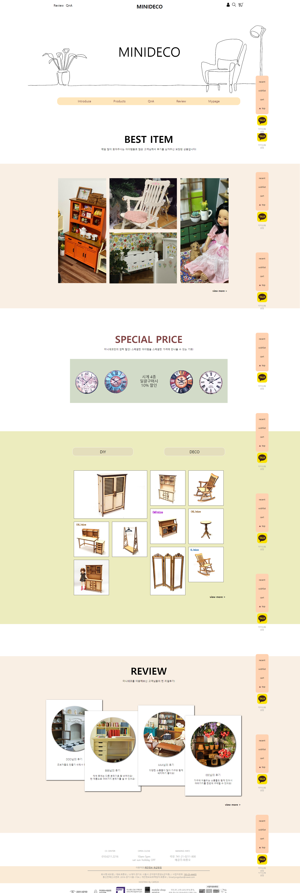

01
MINIDECO
미니어처 가구 쇼핑몰 리뉴얼
기존 미니데코 페이지는 네비게이터 바의 효율성이 낮고, 메뉴 그룹화가 제대로 이루어지지 않아 여러 분야의 메뉴가 뒤섞여있었습니다.
또한 사용자의 흥미를 끌 수 있는 이벤트, 프로모션을 효과적으로 노출시키지 않았습니다.
제가 리뉴얼한 미니데코는 메뉴를 다시 그룹화해 사용자의 접근성과
편의성을 높였습니다. 이벤트 배너를 섹션 사이에 넣어 사용자가 페이
지를 보다가 자연스럽게 확인할 수 있도록 배치했습니다. 또한 페이지
마다 사이드바를 배치해 어디서든 마이페이지, 장바구니, 위시리스트
등의 회원관리 메뉴의 접근성을 높였습니다.
